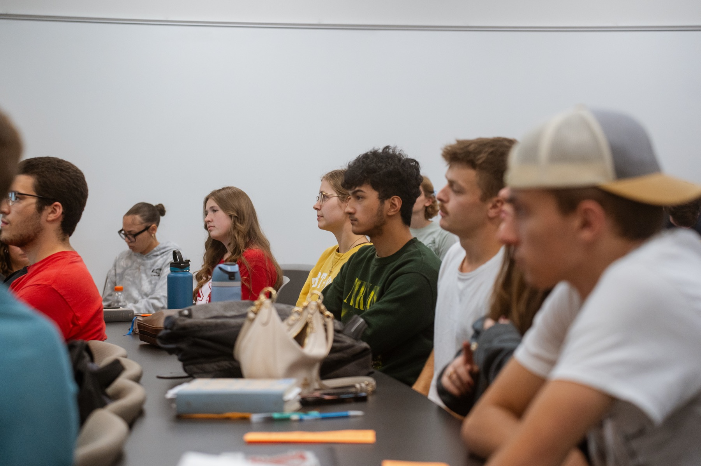
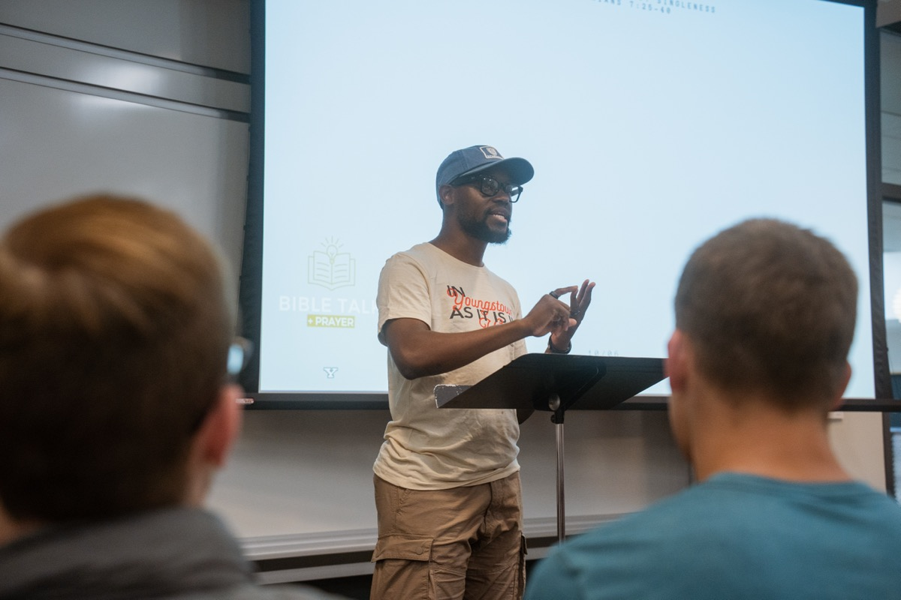
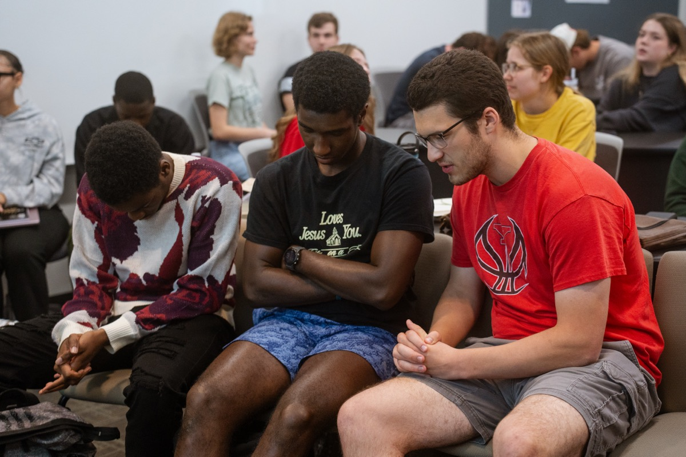

Campus ministry at YSU
Maturing students in Christ at Youngstown State University and beyond.
We meet every Monday at 4pm in the Williamson Building to open the Bible together. Come as you are — no background required.

Every Monday
Bible Talk + Prayer
Williamson Building, Room 1112 · 4:00pm
Alternate Mondays
Street Talk
Across campus · Prayer in the Williamson lobby at noon
This Month at TBT
Three ways in
Whether you want to dig deep into Scripture with a few friends or learn how to talk about your faith on campus, there's a place to start.
All the ways to get involvedQuads + Home Groups
Up to four people reading a book of the Bible together, whenever it suits you. Home groups are larger and meet in a leader's home.
Bible Talk + Prayer
Mondays at 4pm we work through a book of the Bible or a topic, then pray for the people around us.
Sunday Mornings
Join us for the service at Old North Church at 9:15am, then TBT Sunday School right after at 11am.



What our students say
▶ Watch: Student Testimonies (0:49)Moving to college can be scary. It is easy to feel alone and overwhelmed by change. TBT has given me a second family and a support group to help get me through this difficult transition.
When going to college, many things change for better or worse: routines, friends, and locations all change in one way or another. TBT has allowed me to make these changes for the better; I've been able to make many new friends with the same goal -- pursuing Jesus.
TBT has helped me to grow and consider others beyond myself. Through the regular community and teaching of God's Word I am reminded of the love that Christ has for me through His people. During a time when determining what's true is oddly confusing, college students have the opportunity to be reminded of the never changing hope and truth that Jesus brings.
Missed a Monday?
Past talks are collected in one place, book by book.